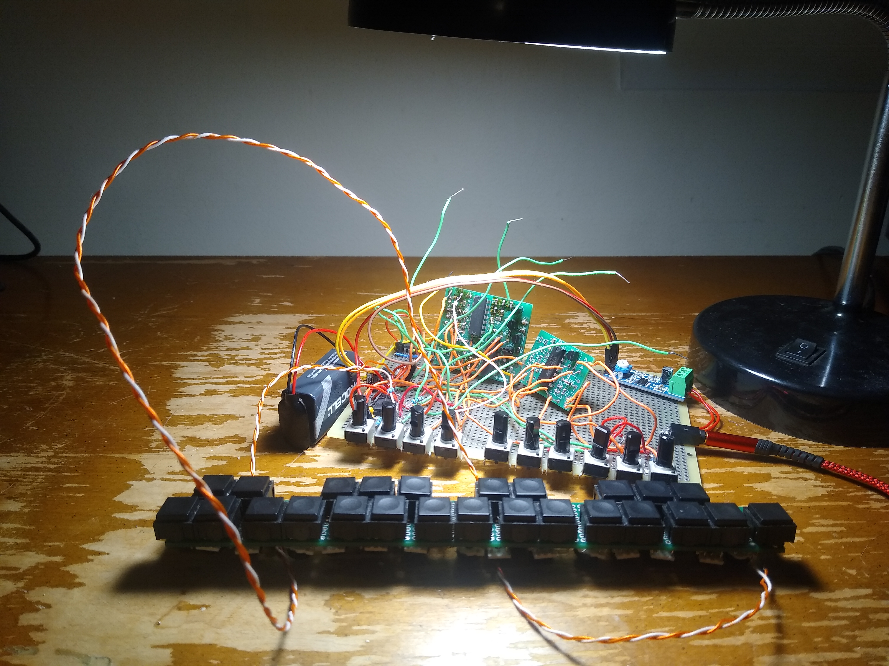

My final year of college involved two large scale projects: an electrical engineering capstone and an honors thesis. The capstone involved designing and building an electrical device of my choice. This would usually be done with a partner, but due to an uneven number of people in the class, I ended up doing mine alone. The thesis involved researching or creating something and writing in depth about it. To make things easy on myself, I related the two projects together by focusing them both on the same project--an analog synthesizer. While the capstone would go into detail on the design and construction of the synthesizer, the thesis would expand upon that by exploring the process of creating music with the synthesizer. To go along with the thesis, I wrote and recorded demos for six songs, which can be found below.
The synthesizer
The synthesizer has the capability to produce a sawtooth wave of varying frequencies, modulate it using a low frequency oscillator, and modify its timbre using a low pass filter with a cutoff frequency controlled by an envelope generator. It's controlled using a built-in keyboard as well as a series of potentiometers, and the output is an 8.5 mm audio jack.
The creation of this synthesizer was a learning experience in which I made many mistakes. Here are some noteworthy issues with my design:
The music ended up being pretty rough, with a significant amount of the lyrics and vocal and synth parts being recorded during the weekend before the project was due. I plan on revisiting some of these songs in the future, though without the synthesizer. The parts I recorded for these songs have since been deleted by accident, meaning they would all need to be rerecorded. I find the synth too difficult to work with for this to be something I want to do in the future.